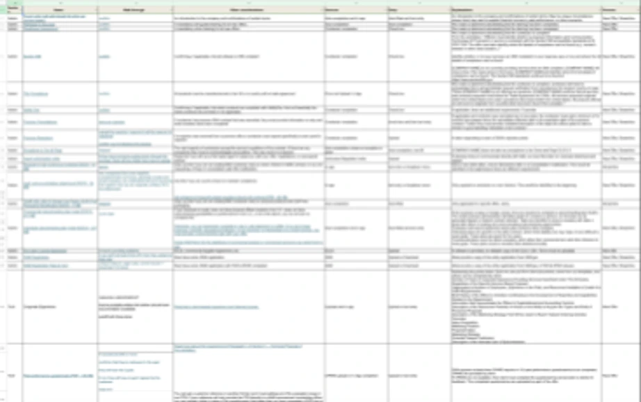
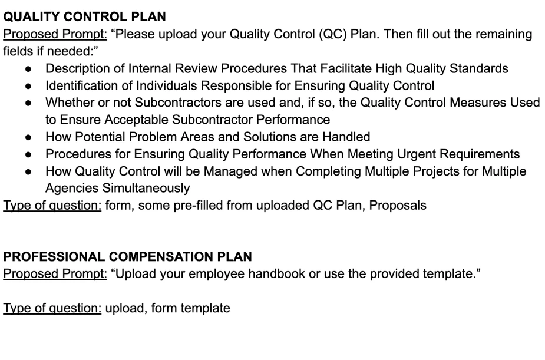
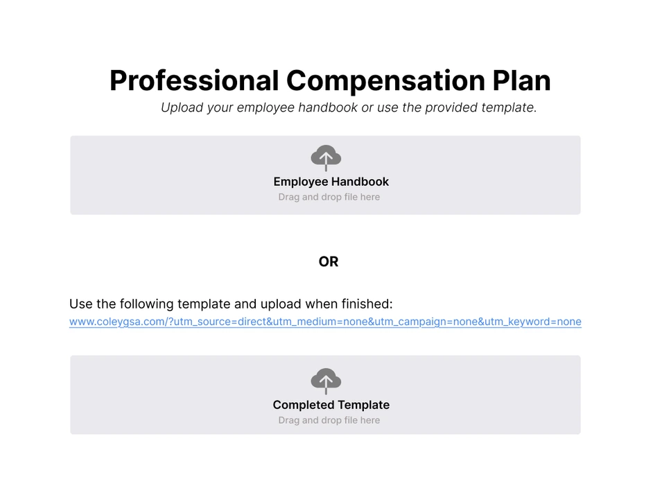
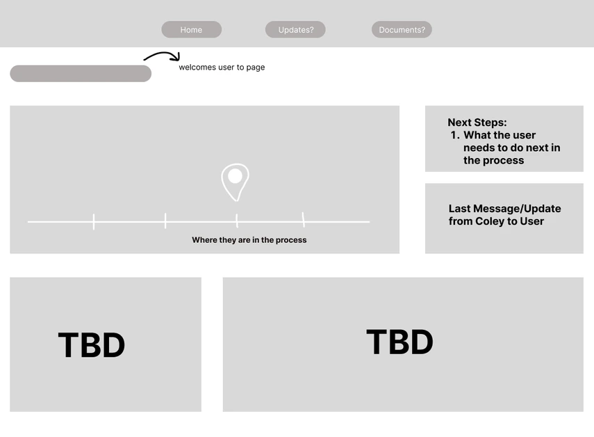
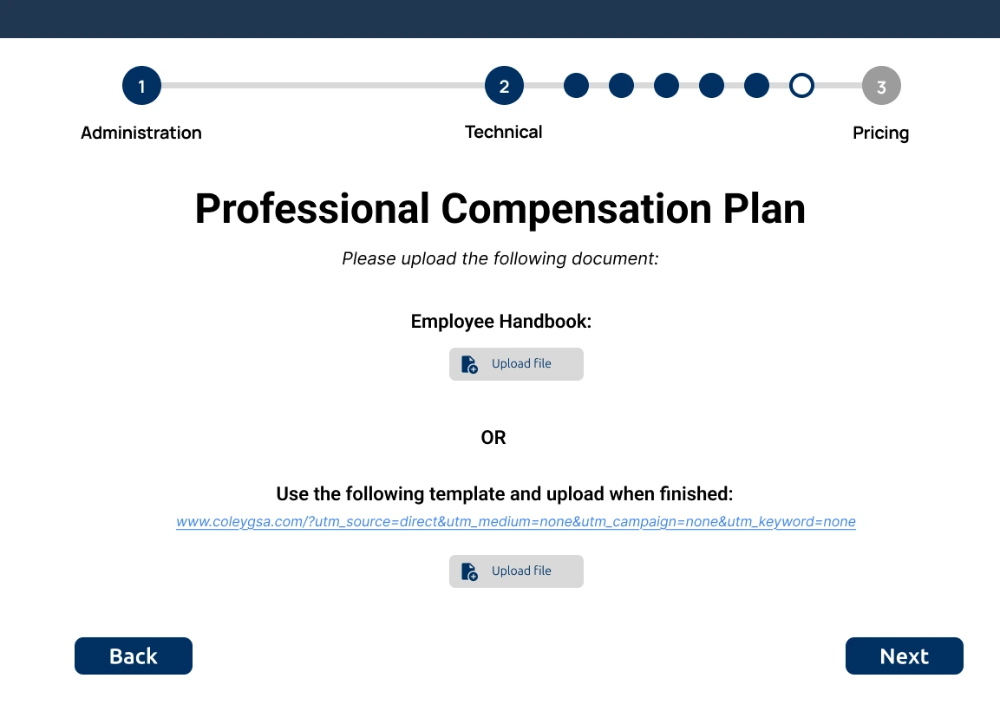
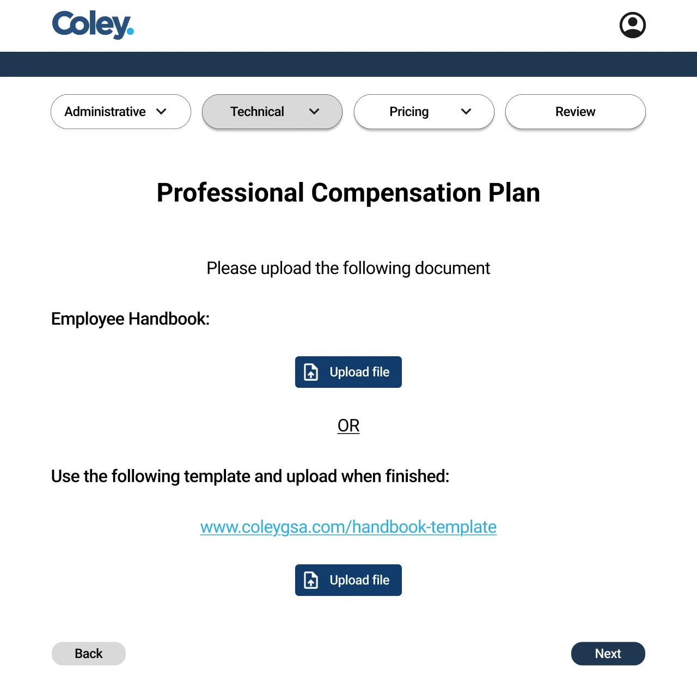
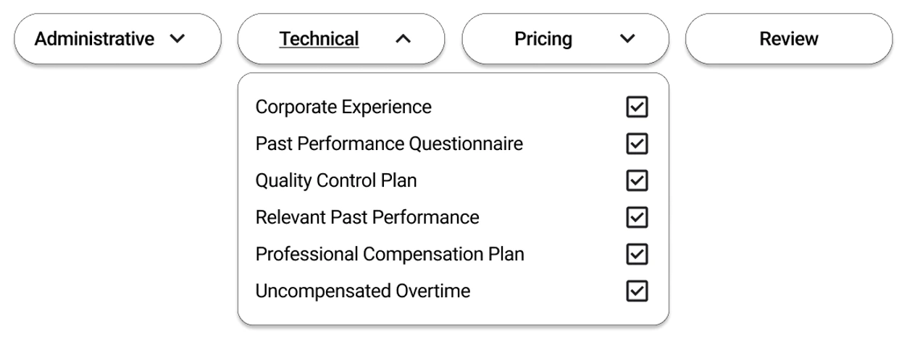
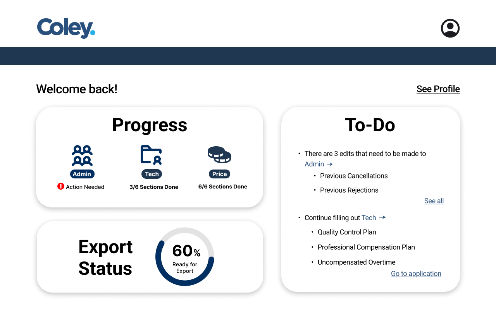
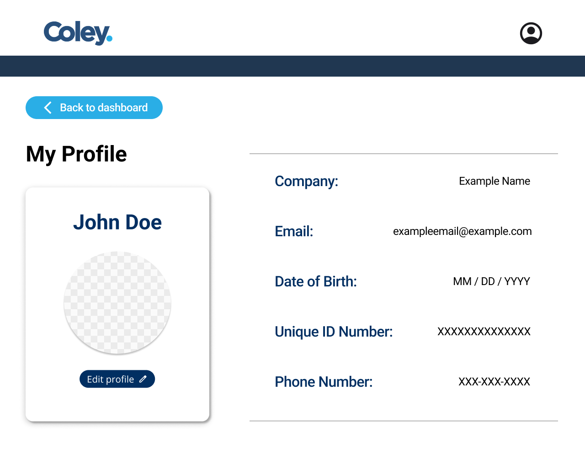

case study
Service Platform
Coley GCS
streamlined business
- Role
- co-UX designer
- Timeline
- Jan – May 2025
- Organization
- UT Austin's Texas Convergent
context
As part of a Forge Team, I served as the designer, working with engineering and business students to help a local business automate their manual workflow and better serve their clients in GSA proposal process for businesses applying to sell through federal contracts.
the problem
Businesses applying for the GSA Schedule face a confusing, time-intensive proposal process that can take months to complete. The workflow involves repetitive document submission, manual tracking, and limited visibility into progress, which makes the process costly, error-prone, and frustrating for both clients and consultants.
How might we simplify the GSA proposal process so clients can easily track their progress and know their next steps?
vision & priorities
From spreadsheet to system
1· spreadsheet

2· content spec

3· form design

4· dashboard wireframe

technical form
A collapsible progress bar
Designed 6 pages for the technical section, including text fields, upload, radio buttons, and redirects.
After receiving feedback that the original progress bar did not clearly show where users were in the process and would not scale easily across varying screen counts, my team and I redesigned it into a collapsible progress bar with subsection titles for clearer navigation.
before

after


dashboard
At-a-glance status
Provided users with multiple entry points into the form so they could jump directly to the section they needed without navigating through the entire process.
Used icons to help users quickly recognize form sections and an alert indicator to draw attention to edits that require action.
Added a visual progress indicator to show how close users are to completing the full form and encourage continued progress.
Included a To-Do section that lists required edits, reminds users where they left off, and links them directly to the relevant sections.


takeaways
What I walked away with
Tools